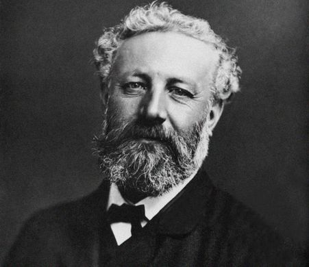
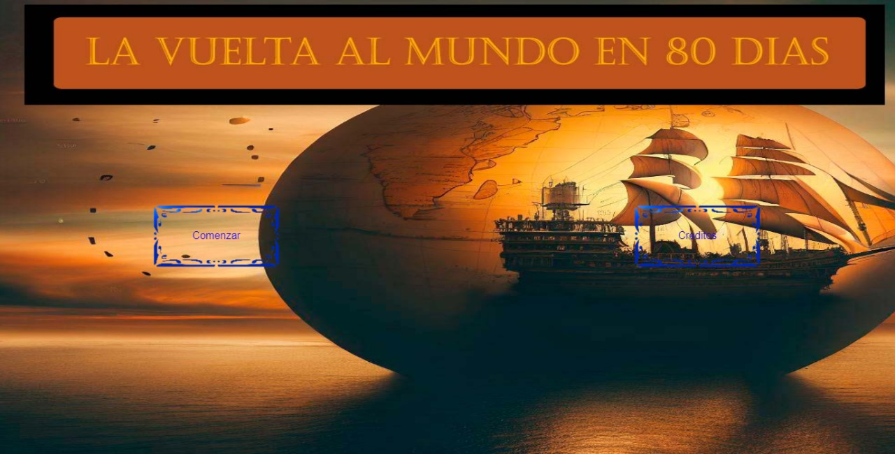

Tecnologias Web 2 TpFinal
Informacion de la aventura grafica elegida
Para el trabajo numero 3 de tecnologias multimedial eleji la vuelta al mundo en 80 dias, esta novela fue escrita por Julio Verne en el año 1872 el 22 de diciembre

La idea primigenia de La vuelta al mundo en ochenta días brotó en la mente de Julio Verne después de leer un artículo periodístico en el verano de 1869 acerca de las nuevas posibilidades de transporte creadas al calor del progreso tecnológico. Dar la vuelta al mundo parecía, ahora sí, algo al alcance de la mano.
Jules Gabriel Verne
Conocido en los países hispanohablantes como Julio Verne , fue un escritor, dramaturgo y poeta francés, célebre por sus novelas de aventuras y por su profunda influencia en el género literario de la ciencia ficción. El nacio el 8 de febrero de 1828 y fallecio el 24 de marzo de 1905, a lo largo de su vida como escritor escribio una gran cantidad de obras como por ejemplo, La vuelta al mundo en 80 dias, Viaje al centro de la tierra, Veinte mil leguas de viaje submarino, La isla misteriosa y De la tierra a la luna entre otras numerosas obras mas. Porque decidi La vuelta al mundo en 80 dias
Para el trabajo Numero 3 de Tecno Multimedial eleji la vuelta al mundo en 80 dias porque las historias de Julio Verne me gustaban mucho de chico y recuerdo de haber visto la pelicual que habia salido de esta novela, asique esa fue una de las razones de las cuales eleji utilizar esta novela. A continuacion deje el trailer de la pelicula de disney en español
Resumen de la pelicula
Phileas Fogg es un inventor que viven en la Inglaterra victoriana. Él cree que puede viajar por todo el mundo en 80 días. Otro inventor lo reta a hacer el viaje, y él está de acuerdo. Los acompañantes en su viaje son su sirviente fiel, Passepartout, y Monique, una hermosa navegante. Utilizando una variedad de medios de transporte y las habilidades marciales de Passepartout, el trío se embarca en una aventura en globo alrededor del mundo.Aqui hay procedimiento del proceso del tp final
Imagenes
Aqui estan las imagenes que utilice para hace la aventura grafica y el juego final, agregue todas las imagenes a un figma para poder mostrar todo mas facil y tambien agruegue el camino de la aventura grafica con los finales alternativos.
Proceso en Figma
Explicaciones
Para recopilar el proceso de de los trabajos utilice un programa que se llama Figma en el cual recopile todas las imagenes del juego y la aventura, tambien hice una linea de la historia con todas las pantallas de esta juento a los finales alternativos y la pantalla de creditos. Tambien con una explicacion de los botones que te llevan a cada pantalla; las imagenes de la aventura grafica estan numeradas de 0 a 13 siendo 0 la portada de la aventura y 13 la pantalla de creditosTp Numero 5
En el trabajo número 5 de tecnología multimedial consistia en hacer un juego utilizando la tematica de la aventura grafica del tp3 y utilizando p5.js, yo hice un juego de esquivar pájaros que vienen cayendo desde arriba de la pantalla en este juego vos sos el globo y te movés utilizando la tecla a para moverte a la izquierda y la tecla de para moverte a la derecha en el juego hay un puntaje en el cual se va sumando por el tiempo que estás vivo dentro del juego cuando te choca uno de los pájaros sale un texto que dice has perdido y termina el juego

Pruebalo aqui
El trabajo final de tecnologías webs consistía en utilizar la aventura gráfica elegida en el trabajo práctico número 3 y unirla a el juego del trabajo práctico número 5 para hacer el juego yo modifiqué la parte estética y elegí que sea un barco esquivando tiburones que van contra el barco
Aventura grafica
Para la aventura grafica eleji "La vuelta al mundo en 80 dias" este fue escrito por Julio Verne en el año 1872, para hacer la aventura grafica utilize un aia para que pueda hascer las imagenes

En la aventura grafica le agruegue un dos finales alternativos en los cuales uno es el juego, tambien agregue una pantalla de creditos
En la aventura grafica puse dos botones en los cuales los que dicen una A son para avanzar con la historia y los que dicen B son para volver en la historia excepto en la primera pantalla que te envia a los creditos en la 4 pantalla que te envia a un final alternativo y en la sexta pantalla que te lleva al juego
Juego

Para poder juegar el juego tienes que ir a la pantalla 6 la cual esta el protagonista con su compañero en un puerto con el capitan del barco y presionar el boton derecho de la pantalla
En este juego el barco lo movés utilizando el mouse y solo puedes moverte en el eje x y también está el mismo puntaje que va aumentando cada vez que estás vivo en el agua una vez que te golpea un tiburón se vuelva a reiniciar el juego y los tiburones comienzan siendo muy chiquitos y con el pasar del tiempo que sobrevivir más tiempo van habiendo más cantidad y más grandes